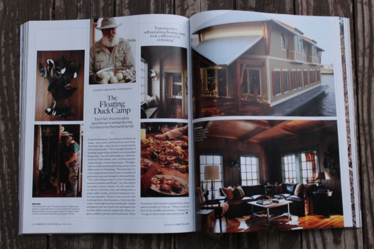

.png)
.PNG)
.PNG)
.PNG)
.PNG)
.PNG)
.JPG)
.JPG)
.PNG)
.PNG)


Happy Weekend! I have more random goodies for you to check out today, so I hope you have a pumpkin spice coffee or hot apple cider nearby. I’ve been saving some of these for a few weeks, so let’s get started!
The last time we had a Talk of the Weekend, we looked at this house – built on a barge, appropriately named Duck Camp. Do you remember it?
The very next day, I purchased the latest issue of Garden and Gun magazine while I was out grocery shopping. When I got home and opened up the issue, I could not believe my eyes!
Look…

There was Duck Camp spread across its pages! The architect’s site did not mention anything about it being in a magazine, so I was delighted to see more of its interiors. You can see additional photos on the magazine’s site here. Or better yet, buy a copy of the magazine for yourself, because the reason I bought the issue was actually for this house…

This home, built in 1879 near Savannah, is gorgeous. You will want to read more about it here.
Another magazine I read is The Cottage Journal. I just learned this week, they have a really good website of homes, gardens, recipes, and artists. I think you will enjoy spending some time there too. 🙂
A week ago we looked at some homes (and a restaurant) designed by Dungan-Nequette. Here is one more you might want to take a peek at. (Love all the red in it. 🙂 )
And speaking of red…
Two years ago, I wrote a post on the colorful rooms of William Diamond and Anthony Baratta, and the other day I found another of Anthony Baratta’s happy houses. He uses A LOT of red in this cabin, and it looks like a very fun house. You can see more photos and read about it here. (I am warning you. When I say A LOT, I do mean A LOT. 🙂 )
One of the colleges our oldest son considered attending was located in Walla Walla, Washington. I’ve been looking at inns in the Seattle area, and although Walla Walla is 4 hours from Seattle, I found one there that looks interesting. (No, we haven’t made plans to go to Washington yet.) The inn is called The Inn at Abeja, and you can read about its transformation from farm buildings to beautiful inn and winery here. (And it is ranked as one of the top 10 wine country inns in the United States.)
I was tickled to receive a thank you message from designer Barbara Westbrook this week. I went back to her website afterwards and found out two very exciting things. First, they are going to be writing a quarterly online newsletter soon, called Workbook. You can sign up to receive it here. And secondly, (this is the biggie for me) she has a book – yes a book!- coming out next year on St. Patrick’s Day. I can’t wait!
Barbara Westbrook: Gracious Rooms
(my Amazon Affiliate link)
There is another book that I am also excited about. Sarah Richardson’s book will be released November 4. Definitely getting it!
And finally…more books!
What do you get when you marry literature with art and design?
You get the amazingly beautiful sets of books from Juniper Books. I have already added some of these to my Christmas gift list. If you haven’t seen them, you should spend some time at their website.
And can you believe it is just a mere two months until Christmas? I guess it really isn’t that hard to believe considering all the Christmas merchandise that is in the stores right now….and someone ( ahem..who shall remain nameless) might have been playing Christmas music last weekend. But I really don’t want to jump over this season and all its wonders quite yet. We have a fall festival today, so I will be working at our school while hundreds of children go wild have fun. 🙂 Then I have a baby shower tomorrow, and a good friend is in town for the weekend. Lots of excitement in store for this weekend before Halloween! And I hope you will be back next week for a Halloween treat here – no tricks – just treats. I promise.
Have a happy weekend!


.PNG)
These homes are just beautiful Kelly! Thanks so much for posting. Puts more ideas in my head for a roadtrip 🙂
——————————————————————–
Thank you so much for reading, Robin. So glad I couldl give you more places to visit!
Kelly
Love the fun cabin with all the red. That red wicker with the red awning striped upholstery is killer! How fun.
———————————————————————
I agree Debra! You know I LOVED all that red…and red wicker is just over the top wonderful. 🙂
Kelly
Hello again —-
I had to come back to comment on The Cottage Journal website. First off — LOVED IT! Second — it featured the Brimfield Antique Fair, which is practically in my backyard. I have been a number of times , and it is amazing! If you ever have a chance to go, you should. I can only imagine what you would decide to buy!
Megan
—————————————————————————
I would love to visit Brimfield. I’ve read so many good things about how wonderful it is. Hope to visit one day!
Kelly
Hi Kelly,
Thanks for the information on Sarah Richardson’s book. I have loved her show for years, and am not happy with HGTV for not consistently carrying it anymore. I don’t think that I have ever seen a room that she decorated that I did not like! I love her style 🙂
Megan
———————————————————————–
I truly do not understand why they do not show all of her shows all the time. I know their viewership would increase if they would. She is amazing!
Kelly
Katrina, she is talking about you! (Please wait until November first!) Kelly, I just took a look at The Cottage Journal. How do you find all of these wonderful magazines and photos and ideas? You always inspire me!
————————————————————————-
Go Katrina! My fellow lover of Christmas music.:) Isn’t The Cottage Journal just wonderful? Glad you liked it Kathy.
Kelly
Kelly,
Wow, this post will occupy the rest of my evening…so many fun links.
I confess, I really hate the rush that the retailers have put on all of us with their Christmas displays in September but…I listened to a CD of Christmas music last week by Kings College (England) Chorale. I can’t help it, I love Christmas music and feel as though we don’t really have as much time as I need to listen to the beauty of Christmas music.
The red rooms above are really great.
xo,
Karen
———————————————————————–
Karen, I think you have just perfectly explained why I listen to Christmas music year round. It IS beautiful,and the month of December alone is simply not long enough. I never thought about it like that, but I do believe you are right! 🙂
Kelly
I had not even opened my new issue of Garden & Gun until I read your post! I love the gray Savannah cottage with black shutters and white trim…and the interiors! Oh my! That faux-painted ‘weathered cypress’ ceiling is gorgeous! Since G&G has a ‘Talk of the South’ section, I can definitely see why you have an affinity for the magazine. 😉
It’s always a treat to read each installment of ‘Talk of the Weekend’ to find out what you have going on or what you are researching. Great post..thanks for sharing!
———————————————————————
I loved that ceiling too. It was hard to believe it wasn’t wood! I am happy you like the weekend posts with all their randomness. 🙂 Thank you for reading and commenting Amy.
Kelly
I just had my pumpkin coffee and finished putting some final touches on my outside fall decorations! There is a Fall sailboat regatta on the lake today and it is just beautiful!! Fall weather is trying to get here but warms up every afternoon. Remember many fall festivals while teaching— loved them and always fun getting to see all the kids and families. My girls will be here all weekend — going to our church’s pumpkin patch and having a nice mixed grill of turkey tenderloin, steak, chicken, pork loin and hotdogs with KY sauce!! Yum!! This is why I live in FL– Oct– May– my favorite time of the year!
——————————————————————
Yum to all the food in your comments Louvina! I bet all the sailboats are just gorgeous on a gorgeous fall day.
I know you are enjoying your weekend.
Kelly
I always love your post, so much inspiration. Since the invention of the century, Pinterest (
——————————————————————-
LOL Thanks Wendy!
Kelly
There is a lot of inspiration here! I already signed up for the newsletter and checked out Juniper Books. I subscribe to Cottage journal, but never thought to check out their website. We don’t carry Garden & Gun magazine, up here in the North Country, but I will look for it online. Thank you for all of the weekend goodies to check out!
———————————————————————
Thank you for going the “extra mile” on all the links, Susan. I will need to sign up for the Juniper Books newsletter myself. I hope you can find a copy of Garden and Gun. I did not realize they were not a national publication.
Thanks for your comment!
Kelly
Good morning, Kelly!
I have the rare quiet morning to enjoy a cup of coffee and visit blogs . . . and I’m so happy to come by and read that you, too, are a fan of Garden & Gun. I receive their online newsletter/magazine, and love it.
And – The Cottage Journal – is one of my absolute favorites. I save every one of their magazines and fall in love with their photos and recipes over & over). So much inspiration! I didn’t know that they have a website. That will be my next stop. Thanks so much for sharing . . .
Have a great weekend,
Suzanne
———————————————————————–
Thank you Suzanne. I am happy that you are enjoying your visit here with a cup of coffee. 🙂 I agree that The Cottage Journal has such wonderful photos and recipes. It really is a great publication.
Kelly
Happy Weekend, Kelly! I had to giggle because I actually had just sat down with my pumpkin coffee (and some rosemary scrambled eggs yum) to enjoy a few minutes reading a few blogs. Love all these beautiful rooms. Sounds like you have a great weekend ahead. Enjoy. I will putting the yard to bed for the winter. It will be here soon in Michigan!
——————————————————————-
Pumpkin coffee and rosemary scrambled eggs – yum! Good luck with your weekend yard projects. 🙂
Kelly
Hi Kelly,
I just wanted to say that although I don’t usually comment I am here everyday enjoying your site! You have a great voice. Thanks so much .
——————————————————————
Thank you so much Liz! I appreciate your reading the posts. 🙂
Kelly
Wow! Such great features to entice me further. I have to say, your tastes are very similar to mine. I’m a house addict, I confess, and swoon over many houses whose styles are not necessarily applicable to my own since I live in a log cabin. The common denominator is cottage with historical elements, though, and I lived in a 1920’s southern Cape Cod for 27 years. Hated to leave that house, but love being in the mountains. Now, naturally, I’m particularly drawn to cottages with rustic elements. You’ve highlighted some wonderful ones with some of my favorite architects and designers. I bought that issue of The Cottage Journal with the photo you featured. Love it! And I never can resist books. All of these look wonderful. Love the vintage looking Juniper books. I collect the early Nancy Drews pre-1950’s. Thanks for the suggestions to explore. Have a wonderful weekend – it sounds like a full one. Is going to be gorgeous and warm here in the NC mountains – you should have a good one, too.
——————————————————————-
Thank you Carolyn. It DOES sound like we have very similar tastes! And you live in one of my favorite places too – the mountains of NC. I hope your weekend was a good one!
Kelly
Love all the beautiful homes. have a great fall weekend.
Kathy
—————————————————————-
Thank you Kathy! I hope your weekend was a great one as well.
Kelly
Thanks for sharing these pictures and their websites to visit. Also, these books look very interesting. I will be on the look out for them when they come out. I am heading to a Fall Festival too and another one tomorrow!
————————————————————————-
Lynne, glad you liked the links to all the websites, Lynne. I hope your Fall Festivals were fun. We couldn’t have asked for better weather for ours. 🙂
Kelly
Your home is wonderful.
——————————————————————–
Thank you!
Kelly